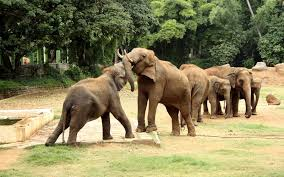
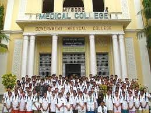
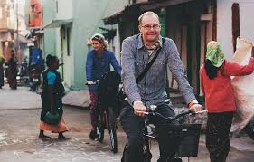
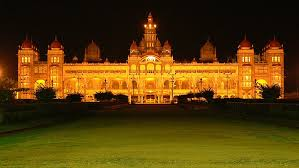
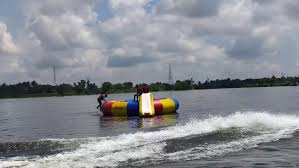
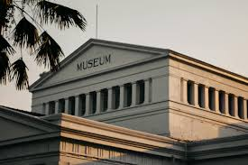
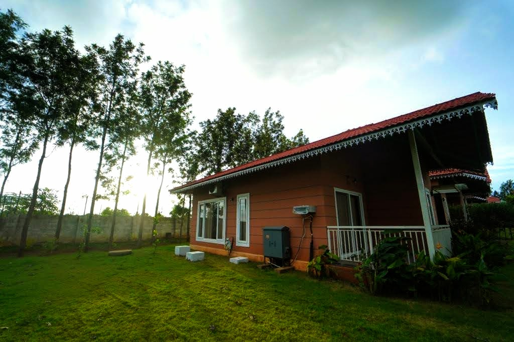
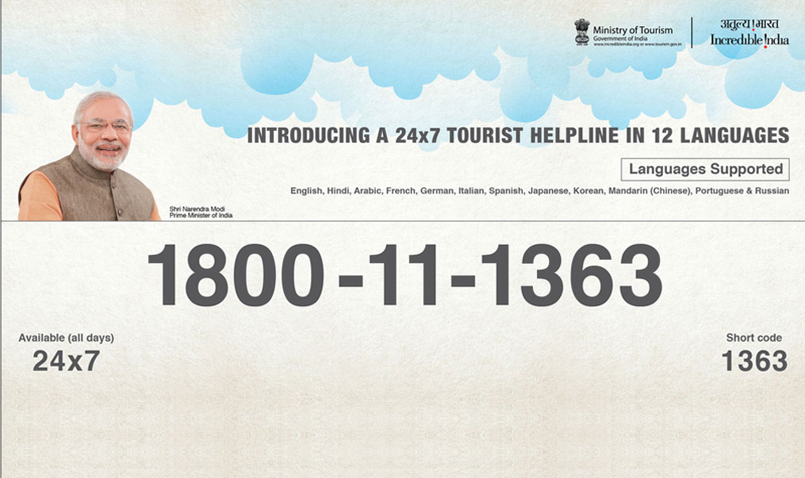

Welcome to Mysore

Discover the beauty and culture of Mysore.
Wildlife Tourism
Explore the rich wildlife of Mysore.
 Nagarahole
Nagarahole, spread over Mysore and Kodagu is covering an area of 847.981 Sq km. Nagarahole is an important Tiger Reserve in Karnataka and is a major hub of conservation under Project Tiger and Project Elephant.
Bandipur National Park
Bandipur National Park, located on the Mysore-Ooty highway in Karnataka, is a part of the Nilgiri Biosphere Reserve, and shares its borders with Nagarhole National Park in Karnataka, Mudumalai Wildlife Sanctuary in Tamil Nadu, and Wayanad Wildlife Sanctuary in Kerala.
Medical Tourism
Discover top medical facilities and services in Mysore.
Eco Tourism
Experience the eco-friendly destinations in Mysore.
Cultural Tourism
Dive into the cultural heritage of Mysore.
Adventure Tourism
Find thrilling adventure activities in Mysore.
Wellness Tourism
Relax and rejuvenate with wellness tourism in Mysore.
| Yoga Retreats | Spas and Wellness Centers |
| Ayurvedic Treatments | Meditation Programs |
| Yoga Center | Address | Contact Number | Website |
| Ashtanga Yoga Research Institute | 8th Cross Road, Vani Vilas Mohalla, Mysore Karnataka- 570002 |
Contact: 09880185500 | Website: http://kpjayi.org/ |
8th Cross Road, Vani Vilas Mohalla, Mysore
Karnataka- 570002
Contact: 09880185500
Website: http://kpjayi.org/
Museums and Galleries
Explore the rich history and art at the museums and galleries of Mysore.
Home Stay
Find the best home stay options in Mysore.
| Home Stay name | Area / Address | Contact Number | Website |
| Mysore home stay | 8th Cross Road, Vani Vilas Mohalla, Mysore Karnataka- 570002 |
Contact: xxxxxxxx | Website: http://homestay.org/ |
Guides
Hire experienced guides for your tours in Mysore.
| Guides name | Area / Address | Contact Number |
| Ramesh | Mysore Palace area | Contact: xxxxxxxx |
| Suresh | KRS | Contact xxxxxxxx633 |
| Harish | Zoo | Contact: xxxxxxxx |
Hotels

Stay at the best hotels in Mysore.
Emergency Contact
In case of emergencies, contact the appropriate services.
| Toll Free Tourist Helpline for Foreign Tourists visiting India |
| The Ministry of Tourism, Government of India has introduced a 24x7 Toll Free Multi Lingual Tourist Help line to facilitate visits of foreign tourists to India. The service is presently available in 12 International languages, including Hindi & English, on the toll free number 1800111363or on a short code1363. The service can be availed of by the visiting tourists while travelling in India. |
Map and Guide
Find your way around Mysore with our detailed maps and guides.
Events
Don't miss out on the exciting events happening in Mysore.
Contact Us

For any inquiries, call our toll-free number: 1800-123-4567